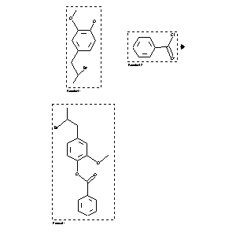

|  |
| FA | RX(1); FLST(1); RX(1) |
Reaction (1 of 1)
| Reaction ID | 613841 |
| Reactant BRN | 3257773; 471389 |
| Reactant | 4-(2-bromo-propyl)-2-methoxy-phenol; benzoyl chloride |
| Product BRN | 3103929 |
| Product | 1-benzoyloxy-4-(2-bromo-propyl)-2-methoxy-benzene |
| No. of Reaction Details | 1 |
Reaction Details (1 of 1)
| Reaction Classification | Preparation |
| Reagent | pyridine |
| Comment | Handbook |
| Citation Pointer | 2252724; Journal; Clemo; Turnbull; JCSOA9; J.Chem.Soc.; 1945; 533; JCSOA9; J.Chem.Soc.; 1946; 701,703; |
Reference (1 of 1)
| Citation Number | 2252724 |
| Document Type | Journal |
| Authors | Clemo; Turnbull |
| CODEN | JCSOA9; JCSOA9 |
| Journal Title | J.Chem.Soc.; J.Chem.Soc. |
| Publication Year | 1945; 1946 |
| Page | 533; 701,703 |